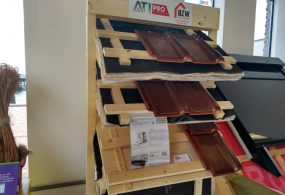
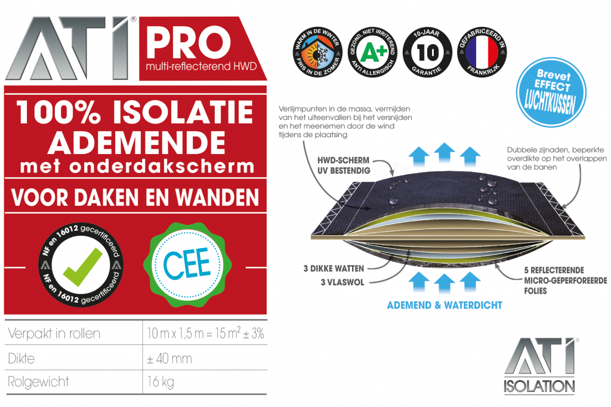
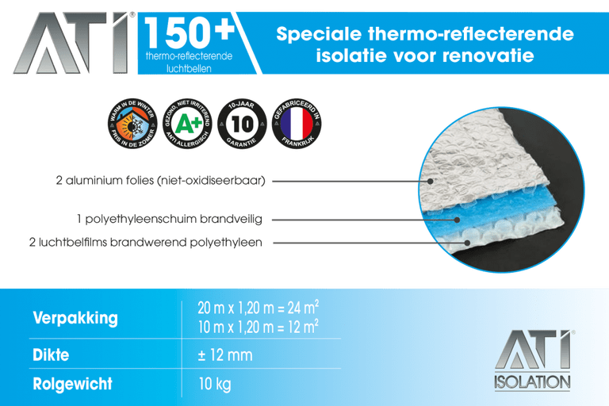

ATI Pro isolatiefolie
De ATI PRO, een meerlaagse isolatiefolie met een damp open eigenschap. Zeer geschikt voor renovatie en het na-isoleren van bijvoorbeeld monumentale panden. Het luchtkusseneffect zorgt voor geweldige prestaties op het gebied van thermoreflectie.
Er is dankzij de microperforatie techniek, de damp open eigenschap van de folie, geen enkele vorm van condensatie mogelijk. Tevens is de bovenlaag van de folie waterdicht. Deze isolatiefolie is zeer geschikt voor het renoveren/ na-isoleren van gebouwen om zo een hoge isolatie waarde te realiseren. Omdat deze reflectiefolie damp open is kan deze rechtstreeks op het dakbeschot worden toegepast. Dit heeft als zeer positief gevolg dat men maar minimaal omhoog gaat met het dak.
De voordelen hiervan zijn dat men de goot, het lood in de schoorsteen, dakkapel enz. kan behouden. Kortom een geweldig isolerend product wat u veel tijd en ruimte bespaart.
Verwerking en plaatsing ATI PRO
De ATI PRO wordt geleverd op een rol van 1,5 x 10m. Deze wordt meestal horizontaal op het dak toegepast. Zorg bij de naden van de isolatiefolie voor een overlap van 10 cm.Deze worden daarna afgetaped met de ATI PRO tape. De folie eerst vastnieten en daarna kan de tengel geplaatst worden. Op een sporenkap volstaan tengels van 22mm dikte. Bij toepassing op het dakbeschot minimaal 30mm.
Hierna kunnen de panlatten geplaatst worden.

ATI 150+
De ATI 150+, een dunne isolatiefolie met aan 2 zijden een zuivere aluminium laag.Deze is zeer geschikt voor het na isoleren van alle plekken waar met een dubbele luchtspouw gewerkt kan worden. Bijvoorbeeld: garages, voorzetwanden, zolders, vloeren enz. Door de geringe dikte van dit materiaal is het zeer ruimtebesparend voor uw woonruimte. Omdat de folie aan 2 zijden reflecteert haalt men een zeer hoog rendement.
Kortom, een super isolerend product wat u veel kou en ruimte bespaart.
Verwerking en plaatsing ATI 150+
De verwerking van de isolatiefolie is zeer eenvoudig. Er wordt eerst een lat bevestigd tegen de vlakke ondergrond.Hierdoor wordt een luchtspouw gecreëerd. Dan wordt de folie er tegenaan geniet. Hierna weer vastzetten met een lat van 20mm. De wand/vloer kan nu afgewerkt worden met een gips, hout etc.
De naden van de folie worden dicht getaped met de speciale ATI tape.

Toepassingsgebied
Dakisolatie
Platdakisolatie IKO EnerthermGeluid
Binnenwandsysteem HV70 Van FaayEco-Baffles Van VRK
Geluidisolatie Isolgomma Van Imbema
Gevel
BuitenisolatiegevelHoutvezelisolatie Van Gutex
Isolatie Isovlas PL Plaat
Spouwisolatie HR++ Neopixels EPS Parels
Glas
Glasfolie van HomechillHR++ Isolatieglas
Renovatieglas en Kozijnen
Vloer
Bodem afsluiting KalkkorrelsReflectiefolie Tonzon